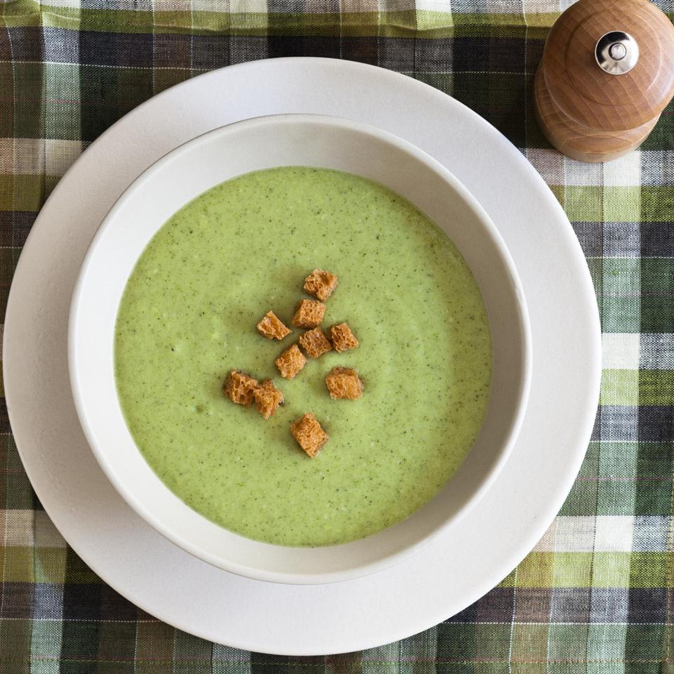

<< Return Home
Cream of broccoli

Description
Broccoli soup is a tasty one. With it's simplicity and being a quick-to-make recipe, it is a classical soup for many families around the world. Teture and sensation in mouth along with the flavour make it an excellent choice to cook today.
This meal should be enough to 5 people.
Ingredients
- 5 tablespoons butter.
- 1 onion.
- 1 garlic clove.
- 1 stalk celery.
- 3 cups of chicken broth.
- 8 cups of broccoli florets.
- 3 tablespoons of flour.
- Salt.
- Grinded black pepper.
Steps
- Chop the onion, the garlic and the celery.
- Melt 2 tablespoons of butter in a stock pot at medium heat.
- Add the onion, garlic and the celery to the pot. Saute until tender.
- Ass broccoli and chicken broth. Cover the pot and simmer for 10 minutes.
- Pour the pot contents into a blender and start it with a few quick pulses so it moves before blend it.
- Puree it intermitently until you get an smooth cream and pour it into a clean pot.
- Melt 3 tablespoon butter in a saucepan in medium-low heat.
- Stir it and add milk.
- Stir until thick and bubbly.
- Add the saucepan into the pot.
- Add salt and pepper as you like.
- Enjoy!